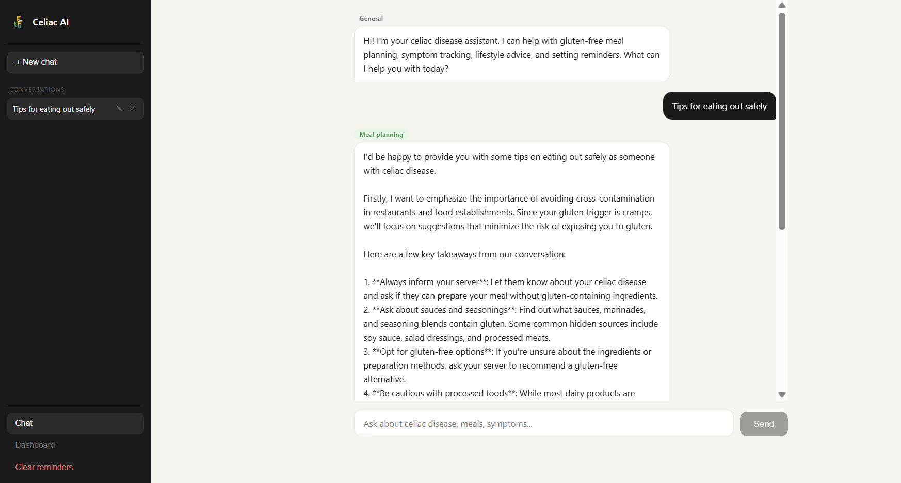
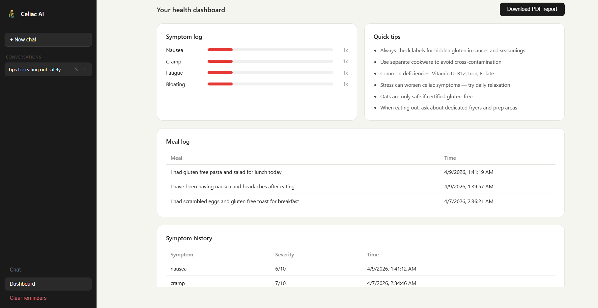

Celiac Disease AI Chatbot System
“A smart, agent-driven AI assistant for celiac disease management that delivers personalised meal guidance, tracks symptoms, and provides timely real-time support making care more accessible and effective.”
Problem Statement
Celiac disease affects approximately 1% of the global population and demands strict dietary control, continuous symptom monitoring, and personalised care. Despite this, patients often lack access to reliable, on-demand guidance tailored to their needs.
Existing chatbot solutions remain generic and insufficient for clinical use, they lack domain knowledge, do not retain user history, and fail to support long term tracking and care.
Literature Review
- Retrieval-Augmented Generation (RAG) improves the accuracy of AI systems by combining language models with relevant external documents, ensuring responses are based on reliable information rather than assumptions.
- Bio_ClinicalBERT, a model trained on clinical data, enables better understanding of medical terminology and patient-related queries, making it more suitable for healthcare applications.
- Multi-agent systems are used to handle complex tasks by dividing them into specialised components, allowing better coordination and more efficient problem-solving.
- Studies in healthcare AI show that personalised systems that track user history and symptoms over time provide more effective and meaningful support to patients.
Research Gap / Innovation
- No system focuses specifically on celiac disease management
- Existing solutions lack persistent cross-session user memory.
- Important features like symptom tracking, reminders and continuous health monitoring are missing
Proposed Solution
- Multi-agent system with specialist agents each focused on a distinct aspect of celiac management.
- Uses a RAG pipeline with Bio_ClinicalBERT and FAISS to ensure every response is grounded in reliable medical knowledge, providing accurate and context-aware guidance.
- Persistent memory agent that learns patient profile enabling increasingly personalised recommendations over time.
- Integrates symptom tracking, smart reminders, and a user-friendly interface with multi-chat support, along with the ability to download meal and symptom logs with timestamps.
System Methodology
System Architecture — Data Flow
RAG Pipeline
Celiac-related documents are processed and stored using Bio_ClinicalBERT and FAISS. Relevant information is retrieved for each query to ensure accurate and reliable responses.
Persistent Memory
The system stores important user details such as symptoms, triggers, and preferences. This information is used across sessions to provide personalised and consistent guidance.
Key Agentic Features
Multi-Agent Routing
The orchestrator identifies user intent and routes queries to one of four specialised agents, each designed for a specific task and response style. Agent badges shown on every response.
Clinical RAG Retrieval
BRetrieves relevant medical information using Bio_ClinicalBERT and FAISS to provide accurate, context-aware, and reliable responses.
Persistent Agent Memory
Stores user details such as symptoms, triggers, and preferences, enabling personalised guidance that improves over time.
Symptom Tracking & Severity
Automatically detects symptoms, records severity levels, and maintains a history to support better monitoring and insights.
Proactive Reminders
Schedules and delivers timely reminders based on user input, helping users manage their daily health routines effectively.
Application Dashboard
The following interface represents the real-time output of the celiac AI chatbot system showing the agent-badged responses, symptom tracking dashboard, meal log, and PDF export.

Chat Interface

Symptom Dashboard
Technology Stack
Academic Credits
Project Guide
Dr. Sandeep Chaurasia
Team Member
Aanya Jain
23FE10CSE00050
Team Member
Ishani Lohar
23FE10CSE00832